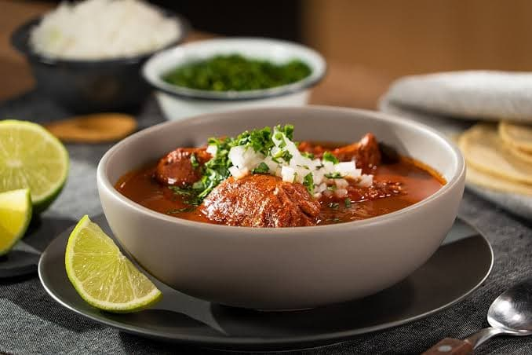

- 1 kilo de carne de res
- 5 dientes de ajo grandes
- 1 cebolla blanca
- 1/2 taza de vinagre blanco
- 1/2 kilo de jitomate
- 2 chiles guajillo
- 2 chiles anchos
- 1/2 ramo de cilantro fresco
- 1/2 cucharada de comino en polvo
- 1 cucharadita de orégano en polvo
- 1/2 cucharada de pimienta negra molida
- 2 de clavos de olor
- Sal al gusto.
Birria
- Pelar los ajos y cebolla,rapidamente picar la mitad de la cebolla.
- Cocinar en el sartén el comino en polvo, el orégano, los clavos de olor y la pimienta.
- Licuar el vinagre con una pizca de sal, media cucharada de comino en polvo y media de pimienta en polvo.
- En una olla agregar la carne previamente pivada y la mezcla que licuamos, dejar reposar media hora.
- Desvenar los chiles y para despues herbir el agua y poner los chiles durante algunos minutos.
- Una vez retirados los chiles licuarcon con los jitomates, media cebolla, dos ajos, el orégano, una pizca de de sal y pimienta.
- Enseguida agregar esta mezcla a la olla con carne y cocinar a fuego bajo hasta que la carne este a punto de desasherce.
- Picar la cebolla sobrante y el cilantro.
- Servir en un plato la birria con caldo y decorar con el cilantro y cebolla.